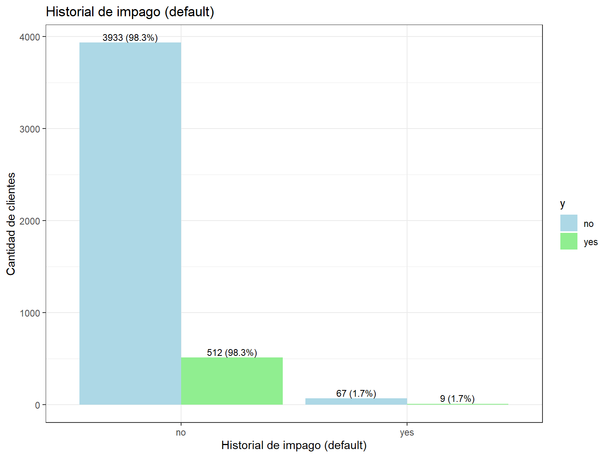
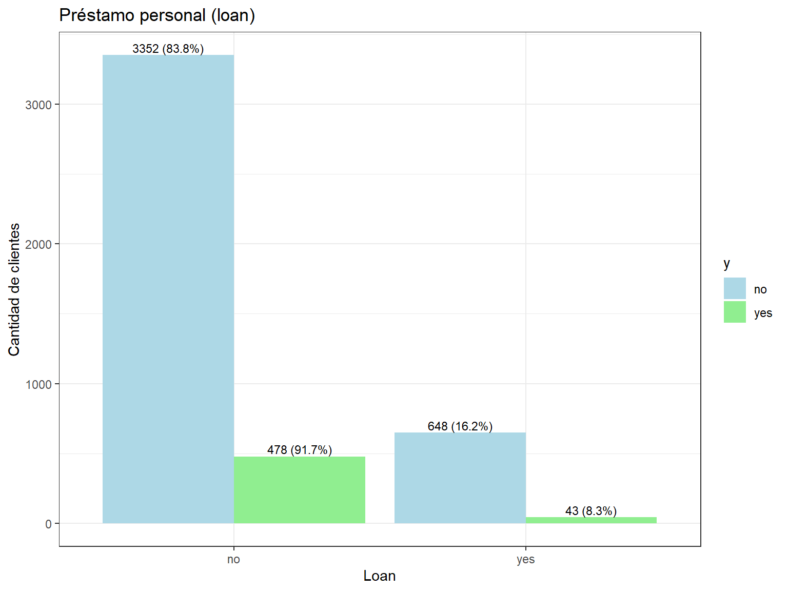

Capitulo 3 Bivariado con variables categoricas
- Tabla de comparación de y con marital.
data %>%
group_by(y) %>%
count(marital, name = "n") %>%
mutate(categoria = marital,
variable = "marital",
porcentaje = (n / sum(n)) * 100) %>%
select(y, variable, categoria, n, porcentaje)## # A tibble: 6 × 5
## # Groups: y [2]
## y variable categoria n porcentaje
## <fct> <chr> <fct> <int> <dbl>
## 1 no marital divorced 451 11.3
## 2 no marital married 2520 63
## 3 no marital single 1029 25.7
## 4 yes marital divorced 77 14.8
## 5 yes marital married 277 53.2
## 6 yes marital single 167 32.1- Tabla de comparación de y con job.
## # A tibble: 24 × 4
## # Groups: y, job [24]
## y job n porcentaje
## <fct> <fct> <int> <dbl>
## 1 no admin. 420 100
## 2 no blue-collar 877 100
## 3 no entrepreneur 153 100
## 4 no housemaid 98 100
## 5 no management 838 100
## 6 no retired 176 100
## 7 no self-employed 163 100
## 8 no services 379 100
## 9 no student 65 100
## 10 no technician 685 100
## # ℹ 14 more rows- Tabla de comparación de y con education.
# Education
data %>%
group_by(y) %>%
count(education, name = "n") %>%
mutate(categoria = education,
variable = "education",
porcentaje = (n / sum(n)) * 100) %>%
select(y, categoria, n, porcentaje)## # A tibble: 8 × 4
## # Groups: y [2]
## y categoria n porcentaje
## <fct> <fct> <int> <dbl>
## 1 no primary 614 15.4
## 2 no secondary 2061 51.5
## 3 no tertiary 1157 28.9
## 4 no unknown 168 4.2
## 5 yes primary 64 12.3
## 6 yes secondary 245 47.0
## 7 yes tertiary 193 37.0
## 8 yes unknown 19 3.65- Tabla de comparación de y con housing.
# Housing
data %>%
group_by(y) %>%
count(housing, name = "n") %>%
mutate(categoria = housing,
variable = "housing",
porcentaje = (n / sum(n)) * 100) %>%
select(y, categoria, n, porcentaje)## # A tibble: 4 × 4
## # Groups: y [2]
## y categoria n porcentaje
## <fct> <fct> <int> <dbl>
## 1 no no 1661 41.5
## 2 no yes 2339 58.5
## 3 yes no 301 57.8
## 4 yes yes 220 42.2- Tabla de comparación de y con loan.
# Loan
data %>%
group_by(y) %>%
count(loan, name = "n") %>%
mutate(categoria = loan,
variable = "loan",
porcentaje = (n / sum(n)) * 100) %>%
select(y, categoria, n, porcentaje)## # A tibble: 4 × 4
## # Groups: y [2]
## y categoria n porcentaje
## <fct> <fct> <int> <dbl>
## 1 no no 3352 83.8
## 2 no yes 648 16.2
## 3 yes no 478 91.7
## 4 yes yes 43 8.25data_plot <- data %>%
group_by(y) %>%
count(default, name = "n") %>%
mutate(categoria = default,
variable = "default",
porcentaje = (n / sum(n)) * 100) %>%
select(y, categoria, n, porcentaje)
# Gráfica de barras agrupadas con etiquetas
data_plot %>%
ggplot(aes(x = categoria, y = n, fill = y)) +
geom_bar(stat = "identity", position = position_dodge(width = 0.9)) +
geom_text(aes(label = paste0(n, " (", round(porcentaje, 1), "%)")),
position = position_dodge(width = 0.9),
vjust = -0.3,
size = 3) +
labs(title = "Historial de impago (default)",
x = "Historial de impago (default)",
y = "Cantidad de clientes"
) +
theme_bw() +
scale_fill_manual(values = c("no" = "lightblue", "yes" = "lightgreen"))
Interpretación Default vs Y:
La distribución del historial de impago muestra un patrón muy claro y relevante para las estrategias de marketing bancario. Entre los clientes con respuesta afirmativa (yes), prácticamente todos (>99%) no tienen historial de impago, mientras que menos del 1% presenta default. Esta tendencia se mantiene de forma similar en el grupo que respondió negativamente (no), donde también más del 98% no tiene historial de impago. Sin embargo, la diferencia clave radica en que los clientes sin historial de impago muestran una mayor predisposición a aceptar el producto bancario. Esta variable es un fuerte predictor de confiabilidad crediticia y sugiere que el banco debe enfocar sus esfuerzos en clientes con historiales crediticios limpios para maximizar las tasas de conversión.
#job vs y
data_plot <- data %>%
group_by(y) %>%
count(job, name = "n") %>%
mutate(
categoria = job,
variable = "job",
porcentaje = (n / sum(n)) * 100
) %>%
select(y, categoria, n, porcentaje)
data_plot %>%
mutate(categoria = reorder(categoria, -n, sum)) %>%
ggplot(aes(x = categoria, y = n, fill = y)) +
geom_bar(stat = "identity", position = position_dodge(width = 0.9), width = 0.8) +
geom_text(
aes(label = paste0(n, "\n(", round(porcentaje, 1), "%)")),
position = position_dodge(width = 0.9),
vjust = -0.5,
lineheight = 0.9,
size = 3.5
) +
labs(
title = "Distribución por ocupación (job)",
x = "Ocupación",
y = "Cantidad de clientes"
) +
scale_y_continuous(expand = expansion(mult = c(0, 0.20))) +
scale_fill_manual(
values = c("no" = "#A7C7E7", "yes" = "#A8E6A2"),
guide = FALSE # üîπ Elimina la leyenda
) +
theme_bw(base_size = 13) +
theme(
plot.title = element_text(size = 14, hjust = 0.5), # üîπ Sin negrita
axis.text.x = element_text(angle = 45, hjust = 1, size = 10),
axis.text.y = element_text(size = 10),
panel.grid.major.x = element_blank(),
panel.grid.minor = element_blank()
)## Warning: The `guide` argument in `scale_*()` cannot be `FALSE`. This was deprecated in
## ggplot2 3.3.4.
## ℹ Please use "none" instead.
## This warning is displayed once every 8 hours.
## Call `lifecycle::last_lifecycle_warnings()` to see where this warning was
## generated.Interpretación Job vs Y:
El análisis ocupacional revela patrones interesantes de comportamiento según el tipo de trabajo. Entre quienes respondieron afirmativamente (yes), las ocupaciones más representadas incluyen management, technician, y admin, seguidas por services y retired. En contraste, en el grupo de respuesta negativa (no), blue-collar workers, management, y technician dominan las categorías. Las ocupaciones como student, retired, y management muestran proporciones relativamente más altas de respuestas positivas, lo que sugiere que estos grupos pueden tener mayor estabilidad financiera o diferentes necesidades de inversión. Los trabajadores de cuello azul (blue-collar) tienden a rechazar más el producto, posiblemente debido a menores ingresos disponibles o diferentes prioridades financieras.
#marital vs y
data_plot <- data %>%
group_by(y) %>%
count(marital, name = "n") %>%
mutate(categoria = marital,
variable = "marital",
porcentaje = (n / sum(n)) * 100) %>%
select(y, categoria, n, porcentaje)
data_plot %>%
ggplot(aes(x = categoria, y = n, fill = y)) +
geom_bar(stat = "identity", position = position_dodge(width = 0.9)) +
geom_text(aes(label = paste0(n, " (", round(porcentaje, 1), "%)")),
position = position_dodge(width = 0.9), vjust = -0.3, size = 3) +
labs(title = "Estado civil (marital)",
x = "Estado civil", y = "Cantidad de clientes") +
theme_bw() +
scale_fill_manual(values = c("no" = "lightblue", "yes" = "lightgreen"))
Interpretación Marital vs Y:
La distribución del estado civil según la respuesta del marketing muestra diferencias relevantes en los patrones de respuesta. Entre quienes respondieron afirmativamente (yes), el 53.17% están casados, el 32.05% solteros y el 14.78% divorciados. En contraste, en el grupo que respondió negativamente (no), la mayoría (63%) también está casada, pero la proporción de solteros (25.73%) y divorciados (11.28%) es menor. Esta diferencia sugiere que las personas solteras y divorciadas presentan una mayor disposición o probabilidad de responder afirmativamente frente a la acción evaluada por la variable y, mientras que los casados tienden más a rechazarla, lo que podría ser clave para estrategias de segmentación o análisis de comportamiento.
#education vs y
data_plot <- data %>%
group_by(y) %>%
count(education, name = "n") %>%
mutate(categoria = education,
variable = "education",
porcentaje = (n / sum(n)) * 100) %>%
select(y, categoria, n, porcentaje)
data_plot %>%
ggplot(aes(x = categoria, y = n, fill = y)) +
geom_bar(stat = "identity", position = position_dodge(width = 0.9)) +
geom_text(aes(label = paste0(n, " (", round(porcentaje, 1), "%)")),
position = position_dodge(width = 0.9), vjust = -0.3, size = 3) +
labs(title = "Nivel educativo (education)",
x = "Educación", y = "Cantidad de clientes") +
theme_bw() +
scale_fill_manual(values = c("no" = "lightblue", "yes" = "lightgreen"))
Interpretación Education vs Y:
La distribución educativa muestra que el nivel de educación influye significativamente en la respuesta al marketing. Entre quienes respondieron afirmativamente (yes), predominan los niveles secondary y tertiary, con una menor representación de primary y unknown. En el grupo de respuesta negativa (no), secondary education domina ampliamente, seguido por primary y tertiary. Los clientes con educación terciaria (universitaria) muestran una mayor propensión a aceptar el producto, lo que puede asociarse con mayores ingresos, mejor comprensión de productos financieros, y mayor capacidad de ahorro. Esto sugiere que las campañas dirigidas a segmentos con mayor educación podrían ser más efectivas.
#housing vs y
data_plot <- data %>%
group_by(y) %>%
count(housing, name = "n") %>%
mutate(categoria = housing,
variable = "housing",
porcentaje = (n / sum(n)) * 100) %>%
select(y, categoria, n, porcentaje)
data_plot %>%
ggplot(aes(x = categoria, y = n, fill = y)) +
geom_bar(stat = "identity", position = position_dodge(width = 0.9)) +
geom_text(aes(label = paste0(n, " (", round(porcentaje, 1), "%)")),
position = position_dodge(width = 0.9), vjust = -0.3, size = 3) +
labs(title = "Préstamo de vivienda (housing)",
x = "Housing", y = "Cantidad de clientes") +
theme_bw() +
scale_fill_manual(values = c("no" = "lightblue", "yes" = "lightgreen"))
Interpretación Housing vs Y:
El análisis del préstamo de vivienda revela un patrón interesante en el comportamiento financiero. Entre quienes respondieron afirmativamente (yes), aproximadamente el 55-60% no tiene préstamo de vivienda, mientras que el 40-45% sí lo tiene. En el grupo de respuesta negativa (no), la proporción es similar pero con una ligera tendencia hacia tener préstamo de vivienda. Los clientes sin préstamo hipotecario muestran una mayor disposición a contratar el depósito a plazo, posiblemente porque tienen mayor liquidez disponible al no tener la carga de una hipoteca, lo que les permite considerar productos de ahorro e inversión.
#loan vs y
data_plot <- data %>%
group_by(y) %>%
count(loan, name = "n") %>%
mutate(categoria = loan,
variable = "loan",
porcentaje = (n / sum(n)) * 100) %>%
select(y, categoria, n, porcentaje)
data_plot %>%
ggplot(aes(x = categoria, y = n, fill = y)) +
geom_bar(stat = "identity", position = position_dodge(width = 0.9)) +
geom_text(aes(label = paste0(n, " (", round(porcentaje, 1), "%)")),
position = position_dodge(width = 0.9), vjust = -0.3, size = 3) +
labs(title = "Préstamo personal (loan)",
x = "Loan", y = "Cantidad de clientes") +
theme_bw() +
scale_fill_manual(values = c("no" = "lightblue", "yes" = "lightgreen"))
Interpretación Loan vs Y:
La variable de préstamo personal presenta un patrón muy claro y significativo. Entre quienes respondieron afirmativamente (yes), la gran mayoría (>85%) no tiene préstamos personales, mientras que menos del 15% sí los tiene. Esta tendencia es aún más marcada que con los préstamos hipotecarios. En el grupo de respuesta negativa (no), también predominan quienes no tienen préstamos personales, pero la proporción de quienes sí los tienen es mayor. Los clientes sin préstamos personales muestran una clara mayor predisposición a contratar el depósito a plazo, lo que indica que la ausencia de deudas de consumo se asocia con mayor capacidad de ahorro y mejor disposición hacia productos de inversión.
#contact vs y
data_plot <- data %>%
group_by(y) %>%
count(contact, name = "n") %>%
mutate(categoria = contact,
variable = "contact",
porcentaje = (n / sum(n)) * 100) %>%
select(y, categoria, n, porcentaje)
data_plot %>%
ggplot(aes(x = categoria, y = n, fill = y)) +
geom_bar(stat = "identity", position = position_dodge(width = 0.9)) +
geom_text(aes(label = paste0(n, " (", round(porcentaje, 1), "%)")),
position = position_dodge(width = 0.9), vjust = -0.3, size = 3) +
labs(title = "Tipo de contacto (contact)",
x = "Tipo de contacto", y = "Cantidad de clientes") +
theme_bw() +
scale_fill_manual(values = c("no" = "lightblue", "yes" = "lightgreen"))
Interpretación Contact vs Y:
El análisis del tipo de contacto revela la efectividad de los diferentes canales de comunicación. Entre quienes respondieron afirmativamente (yes), el contacto cellular (móvil) representa la gran mayoría, mientras que telephone y unknown tienen participaciones menores. En el grupo de respuesta negativa (no), también domina el contacto cellular, pero con proporciones ligeramente diferentes. El contacto por teléfono móvil muestra ser el canal más efectivo, posiblemente porque permite mayor accesibilidad y conveniencia para los clientes. Esto sugiere que las estrategias de marketing deberían priorizar el contacto móvil para optimizar las tasas de conversión.
#poutcome vs y
data_plot <- data %>%
group_by(y) %>%
count(poutcome, name = "n") %>%
mutate(categoria = poutcome,
variable = "poutcome",
porcentaje = (n / sum(n)) * 100) %>%
select(y, categoria, n, porcentaje)
data_plot %>%
ggplot(aes(x = categoria, y = n, fill = y)) +
geom_bar(stat = "identity", position = position_dodge(width = 0.9)) +
geom_text(aes(label = paste0(n, " (", round(porcentaje, 1), "%)")),
position = position_dodge(width = 0.9), vjust = -0.3, size = 3) +
labs(title = "Resultado de campaña previa (poutcome)",
x = "Poutcome", y = "Cantidad de clientes") +
theme_bw() +
scale_fill_manual(values = c("no" = "lightblue", "yes" = "lightgreen"))
Interpretación Poutcome vs Y:
El resultado de campañas previas es un predictor extremadamente relevante del comportamiento futuro. Entre quienes respondieron afirmativamente (yes), predominan claramente los casos de success y unknown, con muy pocos casos de failure. En contraste, en el grupo de respuesta negativa (no), domina abrumadoramente la categoría unknown, seguida por failure, con muy pocos casos de success. Los clientes con historial de éxito en campañas anteriores muestran una probabilidad significativamente mayor de volver a responder positivamente, mientras que aquellos con historial de failure tienden a rechazar ofertas futuras. Esta variable debería ser fundamental para la segmentación y priorización de contactos en futuras campañas.
3.1 Tecnicas inferenciales entre las variables cuantitativas y la variable objetivo
A continuacion se realizan pruebas de comparacion de medias entre dos grupos independientes, sabemos que no hay dependencia entre los grupos por lo que no haremos pruebas para pareados. Para llevar a cabo dichas pruebas, se deben confirmar unos supuestos previamente:
datos <- data
library(tidyverse)
library(nortest)
df_y_yes <- datos %>%
filter(y == "yes")
df_y_no <- datos %>%
filter(y == "no")balance - y:
Por medio de la prueba de normalidad de Kolmogorov - Smirnov verificamos que los datos de ambas muestras presenten un comportamiento normal.
datos %>%
group_by(y) %>%
summarise(n = length(balance),
est_ks = ks.test(scale(balance),'pnorm')$statistic,
p_ks = ks.test(scale(balance),'pnorm')$p.value,
estsw = shapiro.test(balance)$statistic,
p_sw = shapiro.test(balance)$p.value,
est_lt = lillie.test(balance)$statistic,
p_lt = lillie.test(balance)$p.value)## Warning: There were 4 warnings in `summarise()`.
## The first warning was:
## ℹ In argument: `est_ks = ks.test(scale(balance), "pnorm")$statistic`.
## ℹ In group 1: `y = no`.
## Caused by warning in `ks.test.default()`:
## ! ties should not be present for the one-sample Kolmogorov-Smirnov test
## ℹ Run `dplyr::last_dplyr_warnings()` to see the 3 remaining warnings.## # A tibble: 2 × 8
## y n est_ks p_ks estsw p_sw est_lt p_lt
## <fct> <int> <dbl> <dbl> <dbl> <dbl> <dbl> <dbl>
## 1 no 4000 0.257 1.37e-229 0.487 2.18e-75 0.257 0
## 2 yes 521 0.203 4.37e- 19 0.651 3.08e-31 0.203 8.84e-60Aplicando las pruebas de lillie.test, Kolmogorov-Smirnov y Shapiro-Wilk podemos evidenciar que los datos de la categoria numerica \(balance\) no presentan normalidad en ninguno de los dos grupos, esto se concluye a partir de los p-valores observados, donde todos son notoriamente inferiores a 0.05. Por eso, procedemos a usar Wilcoxon rank-sum test o U-test de Mann-Whitney; en este contexto, se recomienda emplear el test de Levene o el test no paramétrico de Fligner-Killeen, ambos diseñados para evaluar la homogeneidad de varianzas y que utilizan la mediana como medida de tendencia central, lo que los hace adecuados en presencia de datos no normales.
## Loading required package: carData##
## Attaching package: 'car'## The following object is masked from 'package:dplyr':
##
## recode## The following object is masked from 'package:purrr':
##
## some## Levene's Test for Homogeneity of Variance (center = "median")
## Df F value Pr(>F)
## group 1 0.1056 0.7452
## 4519La prueba de Levene nos indica que no se encuentran diferencias significativas en la varianza del saldo promedio anual de la cuenta bancaria entre los grupos \((F_{(1)} = 0.1056, \; p\text{-}valor = 0.7452)\). Ahora comprobemos si hay diferencia entre los grupos:
##
## Attaching package: 'rstatix'## The following object is masked from 'package:stats':
##
## filter## # A tibble: 1 × 7
## .y. group1 group2 n1 n2 statistic p
## * <chr> <chr> <chr> <int> <int> <dbl> <dbl>
## 1 balance no yes 4000 521 893230. 0.00000011La prueba de U de Mann-Whitney, nos muestra que hay evidencia estadísticamente significativa de una diferencia en el saldo promedio anual de la cuenta bancaria entre los clientes que aceptan y los que no aceptan contratar un deposito a plazo fijo \((U = 893230, \; p\text{-}valor = 0.00000011)\).
age - y
Por medio de la prueba de normalidad de Kolmogorov - Smirnov verificamos que los datos de ambas muestras presenten un comportamiento normal.
datos %>%
group_by(y) %>%
summarise(n2 = length(age),
est_ks2 = ks.test(scale(age),'pnorm')$statistic,
p_ks2 = ks.test(scale(age),'pnorm')$p.value,
estsw2 = shapiro.test(age)$statistic,
p_sw2 = shapiro.test(age)$p.value,
est_lt2 = lillie.test(age)$statistic,
p_lt2 = lillie.test(age)$p.value)## Warning: There were 4 warnings in `summarise()`.
## The first warning was:
## ℹ In argument: `est_ks2 = ks.test(scale(age), "pnorm")$statistic`.
## ℹ In group 1: `y = no`.
## Caused by warning in `ks.test.default()`:
## ! ties should not be present for the one-sample Kolmogorov-Smirnov test
## ℹ Run `dplyr::last_dplyr_warnings()` to see the 3 remaining warnings.## # A tibble: 2 × 8
## y n2 est_ks2 p_ks2 estsw2 p_sw2 est_lt2 p_lt2
## <fct> <int> <dbl> <dbl> <dbl> <dbl> <dbl> <dbl>
## 1 no 4000 0.0951 7.33e-32 0.963 6.98e-31 0.0951 2.59e-98
## 2 yes 521 0.112 4.29e- 6 0.944 4.44e-13 0.112 3.53e-17Aplicando las pruebas de lillie.test, Kolmogorov-Smirnov y Shapiro-Wilk podemos evidenciar que los datos de la categoria numerica \(age\) no presentan normalidad en ninguno de los dos grupos, esto se concluye a partir de los p-valores observados, donde todos son notoriamente inferiores a 0.05 como en la categoria \(balance\) analizada anteriormente. Por eso, procedemos a usar Wilcoxon rank-sum test o U-test de Mann-Whitney; en este contexto, se recomienda emplear el test de Levene.
## Levene's Test for Homogeneity of Variance (center = "median")
## Df F value Pr(>F)
## group 1 50.677 1.261e-12 ***
## 4519
## ---
## Signif. codes: 0 '***' 0.001 '**' 0.01 '*' 0.05 '.' 0.1 ' ' 1La prueba de Levene nos muestra que existen diferencias significativas en la varianza de las edades de los usuarios entre los grupos \((F_{(1)} = 50.677, \; p\text{-}valor = 1.261e-12)\). Ahora comprobemos si hay diferencia entre los grupos, dado que no se requiere normalidad ni homocedasticidad estricta, usaremos U-test de Mann-Whitney:
## # A tibble: 1 × 7
## .y. group1 group2 n1 n2 statistic p
## * <chr> <chr> <chr> <int> <int> <dbl> <dbl>
## 1 age no yes 4000 521 1011360 0.274La prueba de U de Mann-Whitney, nos muestra que no hay evidencia estadísticamente significativa de una diferencia en la edad de los usuarios entre el grupo que acepta y el que no acepta contratar un deposito a plazo fijo \((U = 1011360, \; p\text{-}valor = 0.274)\).
duration - y
Por medio de la prueba de normalidad de Kolmogorov - Smirnov verificamos que los datos de ambas muestras presenten un comportamiento normal.
datos %>%
group_by(y) %>%
summarise(n3 = length(duration),
est_ks3 = ks.test(scale(duration),'pnorm')$statistic,
p_ks3 = ks.test(scale(duration),'pnorm')$p.value,
estsw3 = shapiro.test(duration)$statistic,
p_sw3 = shapiro.test(duration)$p.value,
est_lt3 = lillie.test(duration)$statistic,
p_lt3 = lillie.test(duration)$p.value)## Warning: There were 4 warnings in `summarise()`.
## The first warning was:
## ℹ In argument: `est_ks3 = ks.test(scale(duration), "pnorm")$statistic`.
## ℹ In group 1: `y = no`.
## Caused by warning in `ks.test.default()`:
## ! ties should not be present for the one-sample Kolmogorov-Smirnov test
## ℹ Run `dplyr::last_dplyr_warnings()` to see the 3 remaining warnings.## # A tibble: 2 × 8
## y n3 est_ks3 p_ks3 estsw3 p_sw3 est_lt3 p_lt3
## <fct> <int> <dbl> <dbl> <dbl> <dbl> <dbl> <dbl>
## 1 no 4000 0.157 6.09e-86 0.758 1.29e-60 0.157 2.23e-274
## 2 yes 521 0.115 2.02e- 6 0.874 3.99e-20 0.115 3.15e- 18Empleando las pruebas de lillie.test, Kolmogorov-Smirnov y Shapiro-Wilk podemos notar que los datos de la categoria numerica \(duration\) tampoco presentan normalidad en ninguno de los dos grupos, esto se concluye a partir de los p-valores observados, donde todos son notoriamente inferiores a 0.05 como en la categoria \(balance\) y \(age\) analizadas previamente. A continuacion, procedemos a usar Wilcoxon rank-sum test o U-test de Mann-Whitney; en este contexto, se recomienda emplear el test de Levene.
## Levene's Test for Homogeneity of Variance (center = "median")
## Df F value Pr(>F)
## group 1 310.43 < 2.2e-16 ***
## 4519
## ---
## Signif. codes: 0 '***' 0.001 '**' 0.01 '*' 0.05 '.' 0.1 ' ' 1La prueba de Levene señala que existen diferencias significativas en la varianza de las duraciones de la ultima llamada entre los grupos \((F_{(1)} = 310.43, \; p\text{-}valor < 2.2e-16)\). Verifiquemos si hay diferencia entre los grupos; debido a que no hay normalidad ni homocedasticidad, usaremos U-test de Mann-Whitney:
## # A tibble: 1 × 7
## .y. group1 group2 n1 n2 statistic p
## * <chr> <chr> <chr> <int> <int> <dbl> <dbl>
## 1 duration no yes 4000 521 385525 2.33e-121La prueba de U de Mann-Whitney, nos muestra que hay evidencia estadísticamente significativa de una diferencia en la duracion de la ultima llamada entre los clientes que aceptan y los que no aceptan contratar un deposito a plazo fijo \((U = 385525, \; p\text{-}valor = 2.33e-121)\).
campaign - y
Veamos si los datos presentan comportamiento normal:
datos %>%
group_by(y) %>%
summarise(n4 = length(campaign),
est_ks4 = ks.test(scale(campaign),'pnorm')$statistic,
p_ks4 = ks.test(scale(campaign),'pnorm')$p.value,
estsw4 = shapiro.test(campaign)$statistic,
p_sw4 = shapiro.test(campaign)$p.value,
est_lt4 = lillie.test(campaign)$statistic,
p_lt4 = lillie.test(campaign)$p.value)## Warning: There were 4 warnings in `summarise()`.
## The first warning was:
## ℹ In argument: `est_ks4 = ks.test(scale(campaign), "pnorm")$statistic`.
## ℹ In group 1: `y = no`.
## Caused by warning in `ks.test.default()`:
## ! ties should not be present for the one-sample Kolmogorov-Smirnov test
## ℹ Run `dplyr::last_dplyr_warnings()` to see the 3 remaining warnings.## # A tibble: 2 × 8
## y n4 est_ks4 p_ks4 estsw4 p_sw4 est_lt4 p_lt4
## <fct> <int> <dbl> <dbl> <dbl> <dbl> <dbl> <dbl>
## 1 no 4000 0.281 6.73e-275 0.563 4.32e-72 0.281 0
## 2 yes 521 0.276 5.78e- 35 0.601 6.93e-33 0.276 5.63e-113A partir de las pruebas de Lilliefors (lillie.test), Kolmogorov-Smirnov y Shapiro-Wilk, se observa que la variable numérica \(campaign\) tampoco sigue una distribución normal en ninguno de los dos grupos analizados. Esta conclusión se fundamenta en los p-valores obtenidos, los cuales son consistentemente menores a 0.05, al igual que lo evidenciado previamente en las variables \(balance\), \(age\) y \(duration\). Por consiguiente, se procede a aplicar la prueba de Wilcoxon rank-sum o U de Mann-Whitney. Se recomienda además utilizar la prueba de Levene para evaluar la homogeneidad de varianzas.
## Levene's Test for Homogeneity of Variance (center = "median")
## Df F value Pr(>F)
## group 1 10.418 0.001257 **
## 4519
## ---
## Signif. codes: 0 '***' 0.001 '**' 0.01 '*' 0.05 '.' 0.1 ' ' 1La prueba de Levene indica que existen diferencias significativas en la varianza de la variable \(campaign\) (numero de contactos realizados durante la campaña actual) entre los grupos analizados \((F_{(1)} = 10.418, \; p\text{-}valor = 0.001257)\). Dado que los datos no cumplen con los supuestos de normalidad ni de homocedasticidad, se procederá a aplicar la prueba U de Mann-Whitney para verificar si existen diferencias significativas entre los grupos.
## # A tibble: 1 × 7
## .y. group1 group2 n1 n2 statistic p
## * <chr> <chr> <chr> <int> <int> <dbl> <dbl>
## 1 campaign no yes 4000 521 1158722. 0.000014La prueba de U de Mann-Whitney, nos muestra que hay evidencia estadísticamente significativa de una diferencia en el numero de contactos realizados durante la campaña actual entre los clientes que aceptan y los que no aceptan contratar un deposito a plazo fijo \((U = 1158722, \; p\text{-}valor = 0.000014)\).
pdays - y
Comprobamos primeramente la normalidad de los datos de ambos grupos:
datos %>%
group_by(y) %>%
summarise(n5 = length(pdays),
est_ks5 = ks.test(scale(pdays),'pnorm')$statistic,
p_ks5 = ks.test(scale(pdays),'pnorm')$p.value,
estsw5 = shapiro.test(pdays)$statistic,
p_sw5 = shapiro.test(pdays)$p.value,
est_lt5 = lillie.test(pdays)$statistic,
p_lt5 = lillie.test(pdays)$p.value)## Warning: There were 4 warnings in `summarise()`.
## The first warning was:
## ℹ In argument: `est_ks5 = ks.test(scale(pdays), "pnorm")$statistic`.
## ℹ In group 1: `y = no`.
## Caused by warning in `ks.test.default()`:
## ! ties should not be present for the one-sample Kolmogorov-Smirnov test
## ℹ Run `dplyr::last_dplyr_warnings()` to see the 3 remaining warnings.## # A tibble: 2 × 8
## y n5 est_ks5 p_ks5 estsw5 p_sw5 est_lt5 p_lt5
## <fct> <int> <dbl> <dbl> <dbl> <dbl> <dbl> <dbl>
## 1 no 4000 0.492 0 0.440 3.28e-77 0.492 0
## 2 yes 521 0.363 5.34e-60 0.640 1.28e-31 0.363 1.06e-197De acuerdo con los resultados de las pruebas de Lilliefors (lillie.test), Kolmogorov-Smirnov y Shapiro-Wilk, la variable numérica \(pdays\) tampoco presenta una distribución normal en ninguno de los grupos analizados. Esta conclusión se basa en los p-valores, los cuales son menores a 0.05 en todos los casos, tal como se observó previamente en las variables \(balance\), \(age\), \(duration\) y \(campaign\). En consecuencia, se opta por aplicar la prueba U de Mann-Whitney. Además, se sugiere emplear la prueba de Levene para verificar la homogeneidad de las varianzas.
## Levene's Test for Homogeneity of Variance (center = "median")
## Df F value Pr(>F)
## group 1 49.495 2.287e-12 ***
## 4519
## ---
## Signif. codes: 0 '***' 0.001 '**' 0.01 '*' 0.05 '.' 0.1 ' ' 1La prueba de Levene indica que existen diferencias significativas en la varianza de la variable \(pdays\) (numero de días transcurridos desde el último contacto previo) entre los grupos analizados \((F_{(1)} = 49.495, \; p\text{-}valor = 2.287e-12)\). Dado que los datos no cumplen con los supuestos de normalidad ni de homocedasticidad, se procederá a aplicar la prueba U de Mann-Whitney para verificar si existen diferencias significativas entre los grupos.
## # A tibble: 1 × 7
## .y. group1 group2 n1 n2 statistic p
## * <chr> <chr> <chr> <int> <int> <dbl> <dbl>
## 1 pdays no yes 4000 521 852275 5.72e-24La prueba de U de Mann-Whitney, nos muestra que hay evidencia estadísticamente significativa de una diferencia en el numero de dias transcurridos desde el ultimo contacto previo entre los clientes que aceptan y los que no aceptan contratar un deposito a plazo fijo \((U = 852275, \; p\text{-}valor = 5.72e-24)\).
Conclusion
Resumiendo la informacion suministrada por las pruebas, es de suma importancia resaltar la relevancia de la variable \(duration\) (primordialmente), la cual muestra diferencias significativas entre ambos grupos y confirma lo proyectado en el EDA, catalogandola como una variable fuerte en relacion con la variable objetivo. Seguido a la variable \(duration\), las variables \(pdays\), \(campaign\) y \(balance\) señalan diferencias significativas entre los grupos; y por ultimo, la variable \(age\) definitivamente no es de mayor impacto y por tanto no es necesario tenerla en cuenta para predecir la variable objetivo \(y\).
3.2 Tecnicas inferenciales entre las variables categoricas y la variable objetivo
A continuación, se presentan los resultados del análisis de asociación entre diferentes variables categóricas del conjunto de datos y la variable objetivo Y, que representa la respuesta del cliente a la campaña de depósito a plazo. Para este propósito, se utilizaron tablas de contingencia que permiten observar la distribución conjunta de las categorías, junto con la prueba de Chi-cuadrado de independencia, la cual evalúa si existe una relación estadísticamente significativa entre cada variable independiente y la respuesta del cliente. De esta manera, se busca determinar qué características de los clientes están asociadas a una mayor o menor probabilidad de aceptar el producto ofrecido por la entidad bancaria.
TABLA JOB vs Y
##
## no yes
## admin. 420 58
## blue-collar 877 69
## entrepreneur 153 15
## housemaid 98 14
## management 838 131
## retired 176 54
## self-employed 163 20
## services 379 38
## student 65 19
## technician 685 83
## unemployed 115 13
## unknown 31 7filas_totales <- rowSums(observados)
col_totales <- colSums(observados)
total_general <- sum(observados)
esperados <- outer(filas_totales, col_totales, FUN = function(f,c) f*c / total_general)
dimnames(esperados) <- dimnames(observados)
esperados##
## no yes
## admin. 422.91528 55.084716
## blue-collar 836.98297 109.017032
## entrepreneur 148.63968 19.360319
## housemaid 99.09312 12.906879
## management 857.33245 111.667551
## retired 203.49480 26.505198
## self-employed 161.91108 21.088918
## services 368.94492 48.055076
## student 74.31984 9.680159
## technician 679.49569 88.504313
## unemployed 113.24928 14.750719
## unknown 33.62088 4.379120#AQUI AGRUPAMOS unemployed/con unknown para que nos queden los esperados mayores a 5
agru <- rbind(
"unemployed/unknown" = colSums(observados[c("unemployed", "unknown"), ]),
observados[!rownames(observados) %in% c("unemployed", "unknown"), ]
)
agru## no yes
## unemployed/unknown 146 20
## admin. 420 58
## blue-collar 877 69
## entrepreneur 153 15
## housemaid 98 14
## management 838 131
## retired 176 54
## self-employed 163 20
## services 379 38
## student 65 19
## technician 685 83filas <- rowSums(agru)
columnas <- colSums(agru)
totalg <- sum(agru)
esperados_n <- outer(filas, columnas, FUN = function(f,c) f*c / totalg)
dimnames(esperados_n) <- dimnames(agru)
esperados_n## no yes
## unemployed/unknown 146.87016 19.129839
## admin. 422.91528 55.084716
## blue-collar 836.98297 109.017032
## entrepreneur 148.63968 19.360319
## housemaid 99.09312 12.906879
## management 857.33245 111.667551
## retired 203.49480 26.505198
## self-employed 161.91108 21.088918
## services 368.94492 48.055076
## student 74.31984 9.680159
## technician 679.49569 88.504313## [1] 67.02528## [1] 10## [1] 18.30704## [1] TRUE## [1] 1.65812e-10Se rechaza la hipótesis nula, por lo tanto, existe una relación significativa entre el tipo de empleo del cliente y su respuesta a la campaña de depósito a plazo. Esto indica que el tipo de trabajo influye en la probabilidad de que el cliente acepte o no el producto ofrecido.
TABLA MARITAL vs Y
##
## no yes
## divorced 451 77
## married 2520 277
## single 1029 167filas_totales <- rowSums(observados)
col_totales <- colSums(observados)
total_general <- sum(observados)
esperados <- outer(filas_totales, col_totales, FUN = function(f,c) f*c / total_general)
dimnames(esperados) <- dimnames(observados)
esperados##
## no yes
## divorced 467.1533 60.84672
## married 2474.6737 322.32626
## single 1058.1730 137.82703## [1] 19.03006## [1] 2## [1] 5.991465## [1] TRUEif (rechaza_H0) {
conclusion <- "Como chi_cuadrado es mayor que el valor crítico, rechazamos H0."
} else {
conclusion <- "Como chi_cuadrado es menor que el valor crítico, aceptamos H0."
}
conclusion## [1] "Como chi_cuadrado es mayor que el valor crítico, rechazamos H0."## [1] 7.373535e-05##
## Pearson's Chi-squared test
##
## data: observados
## X-squared = 19.03, df = 2, p-value = 7.374e-05Se rechaza la hipótesis nula, por lo que hay evidencia estadística de una relación entre el estado civil del cliente y su respuesta a la campaña. Esto sugiere que el estado civil podría estar asociado a distintos niveles de interés o disponibilidad para contratar el depósito.
TABLA EDUCATION vs Y
##
## no yes
## primary 614 64
## secondary 2061 245
## tertiary 1157 193
## unknown 168 19filas_totales <- rowSums(observados)
col_totales <- colSums(observados)
total_general <- sum(observados)
esperados <- outer(filas_totales, col_totales, FUN = function(f,c) f*c / total_general)
dimnames(esperados) <- dimnames(observados)
esperados##
## no yes
## primary 599.8673 78.13271
## secondary 2040.2566 265.74342
## tertiary 1194.4260 155.57399
## unknown 165.4501 21.54988## [1] 15.23658## [1] 3## [1] 7.814728## [1] TRUEif (rechaza_H0) {
conclusion <- "Como chi_cuadrado es mayor que el valor crítico, rechazamos H0."
} else {
conclusion <- "Como chi_cuadrado es menor que el valor crítico, aceptamos H0."
}
conclusion## [1] "Como chi_cuadrado es mayor que el valor crítico, rechazamos H0."## [1] 0.00162524##
## Pearson's Chi-squared test
##
## data: observados
## X-squared = 15.237, df = 3, p-value = 0.001625Dado que se rechaza la hipótesis nula, se concluye que existe una asociación significativa entre el nivel educativo del cliente y su decisión de aceptar el depósito a plazo. Esto puede reflejar diferencias en conocimiento financiero o en confianza hacia los productos bancarios según la formación académica.
TABLA DEFAULT vs Y
##
## no yes
## no 3933 512
## yes 67 9filas_totales <- rowSums(observados)
col_totales <- colSums(observados)
total_general <- sum(observados)
esperados <- outer(filas_totales, col_totales, FUN = function(f,c) f*c / total_general)
dimnames(esperados) <- dimnames(observados)
esperados##
## no yes
## no 3932.75824 512.241761
## yes 67.24176 8.758239## [1] 0.007671703## [1] 1## [1] 3.841459## [1] FALSEif (rechaza_H0) {
conclusion <- "Como chi_cuadrado es mayor que el valor crítico, rechazamos H0."
} else {
conclusion <- "Como chi_cuadrado es menor que el valor crítico, aceptamos H0."
}
conclusion## [1] "Como chi_cuadrado es menor que el valor crítico, aceptamos H0."## [1] 0.9302039##
## Pearson's Chi-squared test with Yates' continuity correction
##
## data: observados
## X-squared = 1.1844e-27, df = 1, p-value = 1No se rechaza la hipótesis nula, lo que indica que no existe una relación estadísticamente significativa entre tener deudas en incumplimiento y la respuesta del cliente. En este caso, el hecho de tener o no un crédito en mora no influye de manera importante en la decisión de aceptar el producto ofrecido.
TABLA HOUSING vs Y
##
## no yes
## no 1661 301
## yes 2339 220filas_totales <- rowSums(observados)
col_totales <- colSums(observados)
total_general <- sum(observados)
esperados <- outer(filas_totales, col_totales, FUN = function(f,c) f*c / total_general)
dimnames(esperados) <- dimnames(observados)
esperados##
## no yes
## no 1735.899 226.1009
## yes 2264.101 294.8991## [1] 49.5439## [1] 1## [1] 3.841459## [1] TRUEif (rechaza_H0) {
conclusion <- "Como chi_cuadrado es mayor que el valor crítico, rechazamos H0."
} else {
conclusion <- "Como chi_cuadrado es menor que el valor crítico, aceptamos H0."
}
conclusion## [1] "Como chi_cuadrado es mayor que el valor crítico, rechazamos H0."## [1] 1.939825e-12##
## Pearson's Chi-squared test with Yates' continuity correction
##
## data: observados
## X-squared = 48.885, df = 1, p-value = 2.715e-12Existe evidencia estadísticamente significativa (p < 0.05) para rechazar la hipótesis nula, por lo tanto, el tener o no un crédito hipotecario está asociado con el interés en adquirir un depósito a plazo fijo. Es decir, el comportamiento de los clientes frente a la oferta de depósito varía según si poseen o no una hipoteca.
TABLA LOAN vs Y
##
## no yes
## no 3352 478
## yes 648 43filas_totales <- rowSums(observados)
col_totales <- colSums(observados)
total_general <- sum(observados)
esperados <- outer(filas_totales, col_totales, FUN = function(f,c) f*c / total_general)
dimnames(esperados) <- dimnames(observados)
esperados##
## no yes
## no 3388.6308 441.36917
## yes 611.3692 79.63083## [1] 22.48136## [1] 1## [1] 3.841459## [1] TRUEif (rechaza_H0) {
conclusion <- "Como chi_cuadrado es mayor que el valor crítico, rechazamos H0."
} else {
conclusion <- "Como chi_cuadrado es menor que el valor crítico, aceptamos H0."
}
conclusion## [1] "Como chi_cuadrado es mayor que el valor crítico, rechazamos H0."## [1] 2.121926e-06##
## Pearson's Chi-squared test with Yates' continuity correction
##
## data: observados
## X-squared = 21.872, df = 1, p-value = 2.915e-06Se rechaza la hipótesis nula, indicando que tener un préstamo personal está asociado con el interés en un depósito a plazo fijo. En otras palabras, el interés por el depósito no es independiente del hecho de tener un préstamo, lo cual puede reflejar diferencias en el perfil financiero o capacidad de ahorro de los clientes.
TABLA CONTACT vs Y
##
## no yes
## cellular 2480 416
## telephone 257 44
## unknown 1263 61filas_totales <- rowSums(observados)
col_totales <- colSums(observados)
total_general <- sum(observados)
esperados <- outer(filas_totales, col_totales, FUN = function(f,c) f*c / total_general)
dimnames(esperados) <- dimnames(observados)
esperados##
## no yes
## cellular 2562.2650 333.73501
## telephone 266.3128 34.68724
## unknown 1171.4223 152.57775## [1] 87.86986## [1] 2## [1] 5.991465## [1] TRUEif (rechaza_H0) {
conclusion <- "Como chi_cuadrado es mayor que el valor crítico, rechazamos H0."
} else {
conclusion <- "Como chi_cuadrado es menor que el valor crítico, aceptamos H0."
}
conclusion## [1] "Como chi_cuadrado es mayor que el valor crítico, rechazamos H0."## [1] 8.304301e-20##
## Pearson's Chi-squared test
##
## data: observados
## X-squared = 87.87, df = 2, p-value < 2.2e-16Existe evidencia estadísticamente significativa para rechazar la hipótesis nula , esto significa que el tipo de medio de contacto influye significativamente en la probabilidad de que el cliente esté interesado en el depósito a plazo fijo. Es decir, la respuesta del cliente varía según el canal de comunicación utilizado.
TABLA POUTCOME vs Y
##
## no yes
## failure 427 63
## other 159 38
## success 46 83
## unknown 3368 337filas_totales <- rowSums(observados)
col_totales <- colSums(observados)
total_general <- sum(observados)
esperados <- outer(filas_totales, col_totales, FUN = function(f,c) f*c / total_general)
dimnames(esperados) <- dimnames(observados)
esperados##
## no yes
## failure 433.5324 56.46760
## other 174.2977 22.70228
## success 114.1340 14.86596
## unknown 3278.0358 426.96417## [1] 386.8774## [1] 3## [1] 7.814728## [1] TRUEif (rechaza_H0) {
conclusion <- "Como chi_cuadrado es mayor que el valor crítico, rechazamos H0."
} else {
conclusion <- "Como chi_cuadrado es menor que el valor crítico, aceptamos H0."
}
conclusion## [1] "Como chi_cuadrado es mayor que el valor crítico, rechazamos H0."## [1] 1.539883e-83##
## Pearson's Chi-squared test
##
## data: observados
## X-squared = 386.88, df = 3, p-value < 2.2e-16Se rechaza la hipótesis nula, lo que indica que existe una relación muy fuerte entre el resultado de la campaña anterior y el interés actual del cliente. En particular, los clientes cuyo resultado previo fue “success” muestran una probabilidad mucho mayor de aceptar la oferta nuevamente, lo que evidencia un patrón de comportamiento repetitivo positivo.